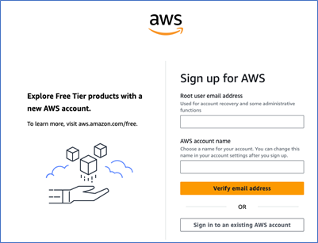
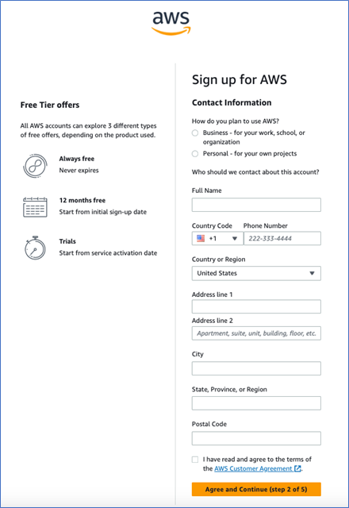
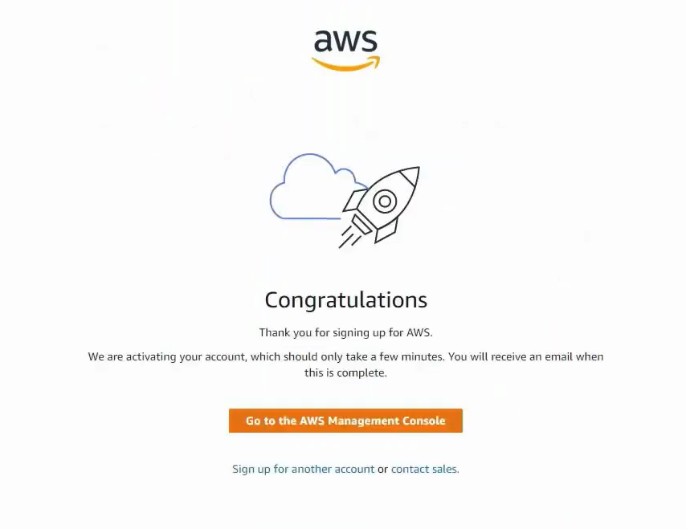
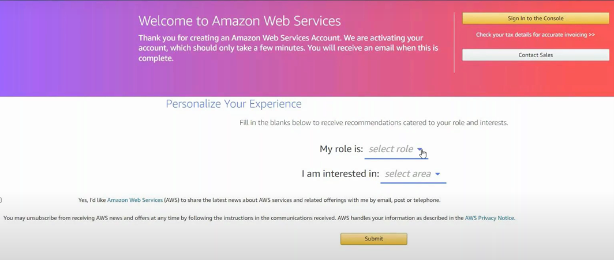

Getting started with AWS Cloud
Table of Contents
Overview
Amazon Web Services (AWS) is an online computing platform. This platform enables you to work efficiently without relying on high-end physical hardware. AWS provides various services such as Amazon EC2, Amazon Simple Storage Service (S3), Amazon VPC, and Amazon RDS. AWS helps you host simple websites to run complex big data applications and machine learning workloads. This guide helps you to get started with AWS.
Benefits
- Easy to use: Enables you to host and manage applications quickly and easily.
- Flexible: Provides you scalability based on your needs.
- Reliable: Provides you with backup and failover.
- Secure: Uses security features to protect your data and applications.
- Cost-effective: Enables you to pay only for the resources you use.
Key system requirements
- Web browser: The latest version of Google Chrome, Mozilla Firefox, Microsoft Edge, or Safari is required for accessing the AWS Management console.
- Internet connection: A stable and fast internet connection is recommended, as AWS is a cloud-service.
- Operating system: AWS is compatible on most modern operating systems including Windows, macOS, and Linux.
Getting Started with AWS
AWS provides extensive cloud computing services with a pay-as-you-go model. This guide helps you create an AWS account and personalize your experience.
Sign Up
Sign-up for AWS includes the following steps:
- Email verification and password setup
- Add contact information
- Add Billing Information
- Confirm your identity
- Select a support plan
- Personalize your account
Prerequisites
- Email address
- Phone number
- User name and address
- Credit/Debit card
Email Verification and Password Setup
-
On your desktop/laptop, open the AWS website.
-
On the left pane, select Create a new AWS account.
-
On the Sign-up page, perform the following steps:
a. In the Root user email address field, enter the email address you want to use to manage your AWS account.
Note: The root user is the administrator for the AWS account.
b. In the AWS account name field, enter your desired account name.
c. Select Verify email address.
A verification code is sent to your email address.

d. In the Verification code field, enter the verification code.
e. Select Verify.
Your email address is verified
f. In the Create your password page, perform the following steps:
i. In the Root user password field, enter your desired account password.
ii. In the Confirm root user password field, reenter the password.
iii. Select Continue (step 1 of 5).

The Contact Information page is displayed.
-
On the Contact Information page, perform the following steps:
a. For the How do you plan to use AWS question, select one of the following options:
- Select Business - for your work, school, or organization.
- Select Personal - for your own projects.
b. In the Who should we contact about this account section, enter your contact information.
c. Select AWS Customer Agreement and read it carefully.
d. Select the check box and select Continue (step 2 of 5).

The Billing Information page is displayed.
-
On the Billing Information page, perform the following steps:
a. In the Billing Information field, enter your desired credit/debit card details for AWS payments.
b. In the Billing address section, select one of the following options:
- Select Use my contact address to use the address provided on the contact information page during billing.
- Select Use a new address to add a different address during billing.
-
Select Verify and continue (step 3 of 5).

An OTP is sent to your registered mobile number for card verification, and you are redirected to the bank’s OTP verification page.
Note: A refundable amount is charged and automatically refunded after verification.
-
On the bank’s OTP verification page, enter the OTP.
-
Select SUBMIT.
The Confirm your identity page is displayed.
Confirm Your Identity
-
On the Confirm your identity page, perform one the following options:
-
Using Text message
i. In the How should we send you the verification code? section, select Text message (SMS).
ii. Select your country code and enter your mobile number.
iii. Enter the captcha code displayed.
iv. Select Send SMS (step 4 of 5).
A verification code is sent to the mobile number.
v. In the Verify code field, enter the verification code.
vi. select Continue (step 4 of 5).

-
Using Voice call
i. In the How should we send you the verification code? section, select Voice call.
ii. Select your country code and enter your mobile number.
iii. Enter the captcha code displayed.
iv. Select Call me now (step 4 of 5).
A verification call from AWS is made to the mobile number.
v. In the Verify code field, enter the verification code received through the call.
vi. select Continue (step 4 of 5).
The Select a support plan page is displayed.
Select a Support Plan
-
On the Select a support plan page, select your desired plan.
Note: You can change your plan anytime in the AWS Management console.
-
Select Complete sign up.

Your support plan is selected and the Congratulations page is displayed.
Personalize Your Account
- On the Congratulations page, select Go to the AWS Management Console.

-
On the Welcome to Amazon Web Services page, perform the following steps:
a. From the select role drop-down, select your desired role.
b. From the select area drop-down, select your area of interest.
c. Select Submit.

Your account is personalized, and AWS suggests services based on your interests and preferences.
You have successfully signed up for an AWS account. You can start exploring and using AWS services to build, deploy, and manage your applications based on your requirements.
Frequently Asked Questions (FAQs)
What is AWS?
Amazon Web Services (AWS) is a cloud computing platform that provides a range of services such as computing power, storage, and databases.
Is AWS free to use?
AWS offers some free services, but not all of them are free.
How do I create an AWS account?
You can create an AWS account by visiting the AWS website and signing up with your email, contact details, and a valid payment method.
Do I need to install AWS on my computer?
No, AWS is a cloud-based service. You can access AWS using your browser.
What is a Root user?
The Root user in AWS is the original account owner with full administrative access.
Do I need a credit card to create an AWS account?
Yes, AWS requires a credit or debit card to verify your account.
Can I store files in AWS?
Yes, you can store files securely using Amazon S3.
How can I learn AWS?
You can learn AWS using AWS documentation and AWS Training & Certification modules available on the AWS website.